Algoritmos para el cálculo de la dosis
Haces de fotones, protones y electrones para radioterapia externa
Funciones del sistema de planificación de radioterapia
RTPS: Sistema de planificación o planificador
Sistema informático en el que se implementan los algoritmos de cálculo, se configura para contener modelos matemáticos de las unidades de tratamiento y permite diseñar los tratamientos de radioterapia y transferirlos a las unidades de tratamiento.
Diseño del tratamiento
El diseño del tratamiento está formado por el conjunto de valores que fijan cada una de las variables disponibles para configurar los haces de tratamiento. Por cada haz: energía, tasa de dosis, unidades monitor, ángulo de gantry y colimador, posición de las mordazas, posición de cada una de las láminas en el MLC, coordenadas y ángulos para la posición de la mesa.
Funciones operativas del planificador
Calcular las unidades monitor UM
Fijado un diseño de tratamiento, el planificador es capaz de calcular1 cuántas UM son necesarias para dar la dosis de acuerdo a la prescripción del Oncólogo de Radioterapia.
Calcular la distribución de dosis
Fijado un diseño de tratamiento, el planificador es capaz de calcular la distribución espacial de la dosis en términos relativos a la dosis de prescripción.
Haces de fotones
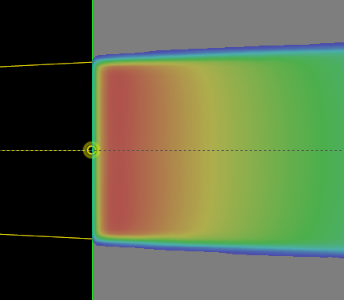
En el comisionado hemos medido en esta situación y por interpolación podríamos calcular la dosis para otros diseños de tratamientos con disposiciones similares si se mantiene esta geometría estándar de irradiación.
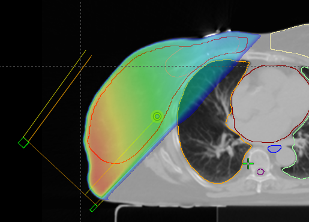
Necesitamos calcular la dosis en condiciones geométricas alteradas respecto a la medida. Aparecen problemas de oblicuidad, inhomogeneidad e irregularidad.
Perturbaciones respecto a la situación de referencia
- Incidencia oblicua: la tangente de la superficie no es perpendicular al eje del haz.
- Inhomogeneidad: el haz atraviesa medios de diferente densidad, o incluso parte del haz puede estar fuera del contorno del paciente.
- Asimetría: las mordazas se mueven de forma independiente y generan campos con dimensiones asimétricas respecto al eje del acelerador (recta que pasa por el foco y el eje de giro del colimador).
- Irregularidad del campo: el uso del MLC hace que la forma de los campos no sea paralelepípedos como los utilizados en el comisionado.
Radioterapia convencional frente a intensidad modulada
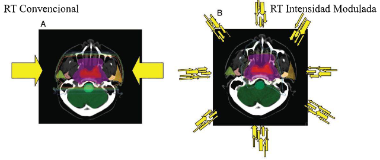Se busca conseguir distribuciones uniformes de dosis con isodosis en forma de polígonos regulares. El diseño de tratamiento queda determinado por un espacio de fases reducido con algunas coordenadas prefijadas (por ejemplo, los ángulos de gantry y colimador). El cálculo puede ser realizado directamente por un humano.
Se busca conseguir una máxima conformación de la dosis, isodosis curvas con incluso concavidades. El espacio de fases es enorme y degenerado (muchas soluciones alternativas posibles). La planificación es inversa, se optimiza la distribución de dosis iterando para acercarse a los objetivos fijados.
Componentes de la dosis consideradas en el cálculo
- Primaria
- Dispersión en el medio
- Contaminación electrónica
- Dispersión en el gantry
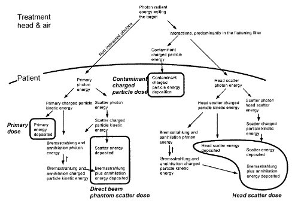
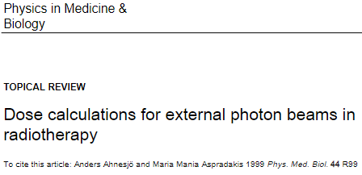
La parte de esta clase que cubre los algoritmos de cálculo de tipo superposición convolución para haces de fotones está extraída del artículo de revisión de Ahnesjö et al.
Clasificación de los algoritmos de cálculo
Los algoritmos se clasifican por el modo en que contemplan el transporte de fotones y electrones
| Modo | Tipo |
|---|---|
| Implícito | Convolución/superposición |
| Explícito | Resolución eq. Boltzmann |
| Explícito | Montecarlo |
- Los modelos implícitos tratan la dispersión de la radiación primaria mediante modelos precalculados de la dispersión que se denominan kernels.
- El kernel se escala para incorporar el efecto de las inhomogeneidades.
- Los modelos implícitos son menos exigentes computacionalmente que los modelos explícitos, en los que la dispersión se trata de forma más detallada.
- Los modelos implícitos han sido los algoritmos de mayor implantación en los planificadores comerciales durante 25 años. Actualmente siguen siendo implementados en planificadores comerciales y en sistemas de cálculo paralelo1
Cálculo de las unidades monitor y de la fluencia
Modelos basados en la relación entre la dosis y la fluencia de energía
La dosis es lineal a la cantidad de radiación a la que el paciente está expuesto.
Esta linealidad permite expresar la dosis por unidad de fluencia \[ d(x,y,z) = \frac{D(x,y,z|\Psi(A;x,y,z_0))}{\Psi_0} \] donde \(\Psi_0\) es un nivel de fluencia de energía de referencia, \(A\) es una variable de apertura general que representa todos los elementos de colimación y modulación del haz, y \(D(x,y,z|\Psi(A;x,y,z_0))\) es la dosis absorbida en el punto \((x,y,z)\) dada la fluencia \(\Psi(A;x,y,z_0)\).
La fluencia de energía de referencia \(\Psi_0\) se define como la fluencia de energía primaria no dispersada en el aire en el punto de calibración, normalmente el isocentro.
Las variaciones laterales de la fluencia de energía primaria se introducen mediante una distribución relativa \(f(A;x,y,z_0)\): \[ \Psi_{\text{prim}}(A;x,y,z_0) = \Psi_0 f(A;x,y,z_0) \]
- La fluencia total de fotones del haz se obtiene añadiendo los fotones dispersados desde las partes irradiadas del cabezal del tratamiento: \[ \Psi(A;x,y,z_0) = \Psi_0 \left( f(A;x,y,z_0) + \frac{\Psi_{\text{hsc}}}{\Psi_0}(A;x,y,z_0) \right) \]
Unidades Monitor (UM)
- Denotamos la UM como \(M\).
- Las UM registradas para un haz dado se separan en dos partes, \(M_0\) y \(M_b\).
- \(M_0\) es la señal proporcional a la fluencia hacia adelante a través de la cámara de monitor.
- \(M_b = M_b(A) \approx M_0 \cdot b(A)\) es proporcional a la fluencia de partículas retrodispersadas en el monitor desde la parte superior de los colimadores ajustables.
- La fluencia total de energía entregada en el aire por unidad de monitor es: \[ \frac{\Psi(A;x,y,z_0)}{M} = \frac{\Psi_0}{M_0 (1 + b(A))} \left( f(A;x,y,z_0) + \frac{\Psi_{\text{hsc}}}{\Psi_0}(A;x,y,z_0) \right) \]
Normalización de la Dosis
- La relación entre las UM y la dosis para el campo \(A\) será \[ \frac{D(A;x,y,z)}{M} = \frac{\Psi_0}{M_0 (1 + b(A))} d(A;x,y,z) \]
donde el término \(\Psi/M_0\) lo podemos obtener requiriendo que la dosis medida para un campo de calibración \(A_{\text{cal}}\) y posición \((x_{\text{cal}}, y_{\text{cal}}, z_{\text{cal}})\) sea igual a la dosis calculada para las mismas condiciones, obtenemos: \[ \frac{\Psi_0}{M_0} = \frac{[D(A_{\text{cal}}; x_{\text{cal}}, y_{\text{cal}}, z_{\text{cal}})/M]_{\text{Measured}}}{[D(A_{\text{cal}}; x_{\text{cal}}, y_{\text{cal}}, z_{\text{cal}})/\Psi_0]_{\text{Calculated}}} (1 + b(A_{\text{cal}})) \]
Modelos necesarios para implementar el formalismo1
- Modelo de la fluencia de energía primaria y la fluencia dispersada en el cabezal antes de ejecutar el motor de cálculo de dosis \(d(...)\).
- Modelo de la retrodispersión del colimador hacia los monitores, indicada por \(b(A)\).
Cálculo de la distribución espacial de dosis absorbida
Métodos implícitos en la dosimetría
Modelos de convolución/superposición basados en kernel
- La deposición de dosis se ve como una superposición de respuestas (kernels) ponderadas apropiadamente a irradiaciones puntuales.
- Bajo condiciones de invarianza, los kernels se superponen mediante convoluciones (altísima eficiencia computacional).
- Los kernels no son medibles, pero son fáciles de calcular por Montecarlo.
Implementación clínica
Su implementación en la clínica comenzó a partir de mediados de la década de los ochenta, pero no se generalizó en las implementaciones de los planificadores comerciales hasta comienzos de los años 2000.
Los modelos de kernel pueden manejar explícitamente el grado de libertad planteado por las máquinas de tratamiento modernas sin mayores aproximaciones, han sido en general la herramienta principal para aplicaciones de terapia conformacional.
Kernels de deposición de energía
- Los fotones pueden viajar grandes distancias sin interaccionar. La energía y dirección de un fotón primario son independientes de dónde interactúa.
- En medios homogéneos, la deposición de energía por partículas secundarias alrededor del sitio de interacción primaria es independiente de la ubicación del sitio y puede describirse mediante un kernel.
- El kernel se define como la distribución de energía impartida por unidad de volumen en agua, por un haz de fotones elemental que incide en el origen de coordenadas del kernel.
- Los kernels \(h(r)\) se normalizan por la energía total que imparte el haz primario \[ \int\int\int_{\infty} h(r)dV \equiv 1 \]
- Separando un kernel puntual en uno para la dosis primaria (\(h_p\)) y otro para la dosis dispersa en el maniquí (\(h_s\)), la integral del kernel se relaciona con los coeficientes de absorción de energía
\[ \int\int\int_{\infty} h_p(r)dV = \frac{\mu_{en}}{\mu} \quad \int\int\int_{\infty} h_s(r)dV = \frac{\mu - \mu_{en}}{\mu} \]
Cálculo de Kernels
Se calculan mediante métodos de Montecarlo1
Se parametrizan2 y tabulan: \[ h(r) = \frac{A_{\theta}e^{-a_{\theta}r} + B_{\theta}e^{-b_{\theta}r}}{r^2} \]
\(A_{\theta}\), \(a_{\theta}\), \(B_{\theta}\) y \(b_{\theta}\) son parámetros de ajuste tabulados en función del ángulo de dispersión \(\theta\). El primer término describe principalmente la dosis primaria y el segundo término la fracción de dosis dispersa.
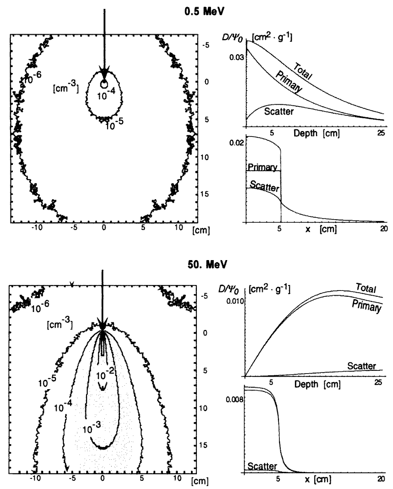
Cálculo de la dosis a partir del kernel puntual
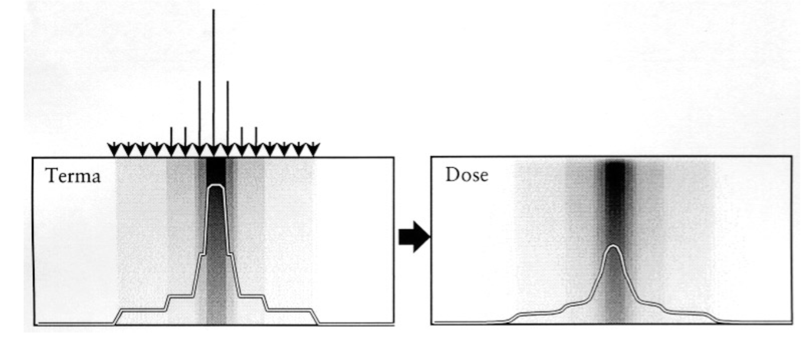
- Trazado de rayos de fotones primarios modulados por elementos del cabezal y del paciente. Se calcula la energía liberada en el paciente por las interacciones de estos fotones primarios (Terma).
- Cálculo de la dosis mediante la superposición de kernels ponderados por el Terma:
\[ D(r) = \int\int\int_V T(s)h(r - s)d^3s \]
- \(T(s)\) es el Terma (energía total liberada por masa de la fluencia de energía de los fotones primarios \(\Psi(s)\) en el elemento de volumen \(d^3s\).
Aproximaciones y limitaciones inherentes a los modelos de superposición de kernel puntual
- Las propiedades espectrales y geométricas de las fuentes de rayos X clínicos.
- El medio heterogéneo de extensión finita que es el paciente.
- Las restricciones de tiempo impuestas por la planificación interactiva del tratamiento.
Generalización para variaciones espectrales del haz primario
Los haces polienergéticos se tratan integrando también en energía:
\[ D(r) = \int_E \int\int\int_V T_E(s)h(E, r - s)d^3s dE \]
donde la dependencia de la energía se incluye utilizando un kernel dependiente de la energía y un Terma diferencial en energía:
\[ T_E(r) = \frac{\mu}{\rho}(E, r)\Psi_E(r) \]
El tiempo de cálculo se multiplica por el número de energías consideradas. En la práctica se consideran al menos cinco energías.
Dependencia de la energía con la posición
El haz primario se endurece con la profundidad y se ablanda a medida que nos alejamos del eje por el aumento relativo de radiación dispersa.
La variación de la calidad del haz afecta fundamentalmente al cálculo del Terma. \[ D(r) = \int_E \int\int\int_V T_E(s)h(E, r - s)d^3s dE \approx \int\int\int_V P(s)\tilde{h}_p(r - s)d^3s + \int\int\int_V S(s)\tilde{h}_s(r - s)d^3s \]
donde las distribuciones de energía liberada para primaria, \(P\) (es decir, el kerma de colisión), y dispersa, \(S\), se dan por:
\[ P(r) = \int T_E(r)\frac{\mu_{en}}{\mu}(E)dE \text{ ; }\quad S(r) = \int T_E(r)\left(1 - \frac{\mu_{en}}{\mu}(E)\right)dE \]
con los kernels correspondientes ponderados por el Terma a una cierta profundidad \(z_0\) y renormalizados para producir integrales unitarias sobre el espacio infinito
\[ \tilde{h}_p(r) = \frac{\int \Psi_E(z_0)\mu(E)h_p(E, r)dE}{\int \Psi_E(z_0)\mu_{en}(E)dE} \text{ ; }\quad \tilde{h}_s(r) = \frac{\int \Psi_E(z_0)\mu(E)h_s(E, r)dE}{\int \Psi_E(z_0)(\mu(E) - \mu_{en}(E))dE} \]
Divergencia del haz
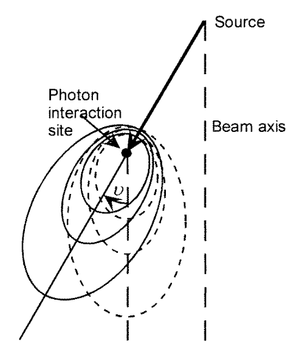
La divergencia del haz introduce:
- Un factor de reducción inverso al cuadrado de la distancia al foco,
- Un aumento lineal de cada dimensión del campo con la profundidad
- Una rotación, ‘inclinación’, de los kernels.
Para acelerar el cálculo, la corrección por cuadrado de la distancia se introduce después de realizar la superposición en lugar de sobre la interacción primaria. Probablemente irrelevante en la actualidad con la potencia de cálculo disponible.
En la práctica, el uso de kernels paralelos es una aproximación aceptable para la mayoría de las situaciones clínicas y en general la inclinación de los kernels se ignora.
Escalado de densidad con la heterogeneidad del tejido y extensión finita del paciente
Se escala el kernel puntual \(h_{\rho_0}\) de un medio homogéneo de densidad másica \(\rho_0\), por la densidad electrónica media entre el punto \(s\) de liberación de energía y el punto \(r\) de deposición de energía
\[ h_{het}(s, r) = \frac{\rho(r)}{\rho_0} c^2 h_{\rho_0}[c\cdot (r - s)] \]
donde
\[ c = c(s, r) = \int_0^1 \rho_{rel}[s - \lambda(s - r)] d\lambda \]
\(\rho_{rel}\) es la densidad electrónica relativa al medio de referencia.
La integral de convolución para el cálculo de la dosis se reemplaza entonces por la integral de superposición:
\[ D(r) = \int\int\int_V T(s)\frac{\rho(s)}{\rho_0} c^2 h_{\rho_0}[c(r - s)] d^3s \]
Métodos explícitos. Solución numérica de la ecuación de transporte de Boltzmann
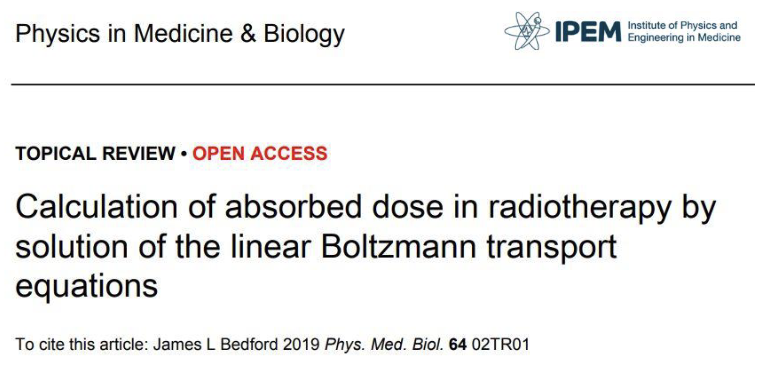
La parte de esta clase que cubre los algoritmos de cálculo basados en la solución numérica de la ecuación de transporte de Boltzmann está extraída del artículo de revisión de James L. Bedford.
- La ecuación de Boltzmann es la relación integro-diferencial que describe la variación espacial de las fluencias de fotones y electrones.
- Toma en cuenta todas las interacciones que se producen en el paciente, y cómo modifican la fluencia.
- Puesto que en las interacciones de fotones se producen electrones, y al contrario, la fluencia de fotones aparece también en la ecuación de la fluencia de electrones, y viceversa.
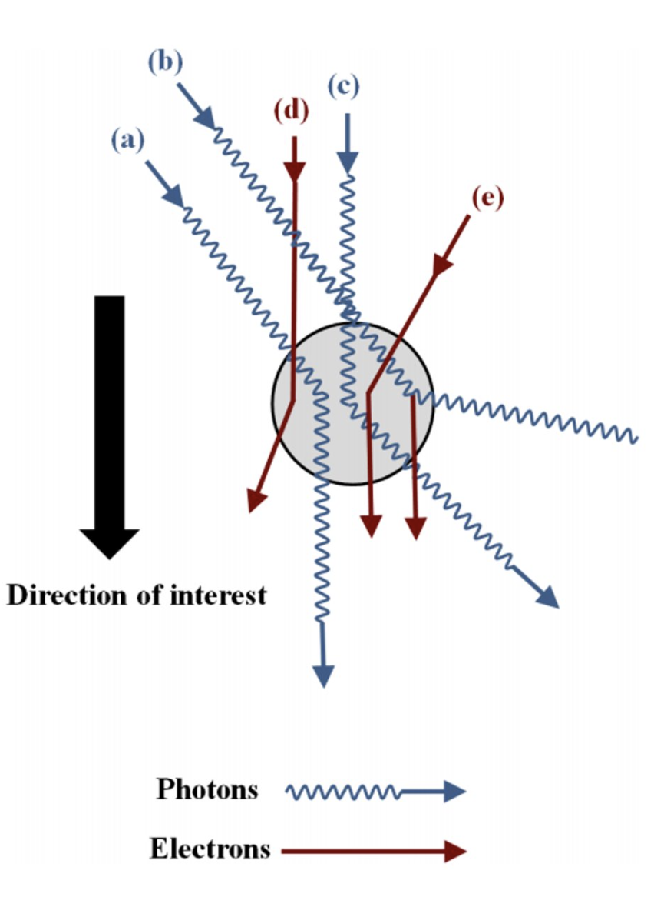
Balance de fluencias
- El gradiente de la fluencia en una dirección y un punto determinados depende del balance de partículas que se añaden o sustraen por fenómenos de dispersión y absorción.
- Las pérdidas en una dirección se convierten en contribuciones en otra.
- Su solución proporciona la distribución espacial de la fluencia y con ella la dosis absorbida.
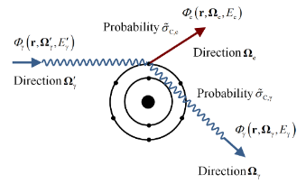
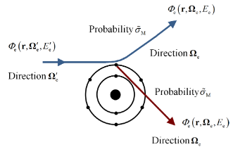
Interacciones consideradas en el cálculo
En haces de radioterapia externa, para no complicar la ecuación en exceso, se suelen considerar solo las interacciones más relevantes de modo simplificado.
- Dispersión fotón e- (Compton)
- Dispersiones inelásticas e- e- (Møller)
- Dispersiones elásticas núcleo e- (Mott)
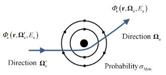
Lista de símbolos
- \(\Omega_\gamma\): una normal unitaria en la dirección de interés, subíndice según el tipo de radiación.
- \(r\): la posición de interés.
- \(E_\gamma\): la energía de interés del fotón.
- \(E_e\): la energía de interés del electrón.
- \(\rho_c(r)\): la densidad de núcleos atómicos en la posición \(r\).
- \(\rho_e(r)\): la densidad de electrones en la posición \(r\).
- \(\Phi_\gamma(r, \Omega_\gamma, E_\gamma)\): la fluencia de fotones en la posición \(r\), con dirección \(\Omega_\gamma\) y energía \(E_\gamma\).
- \(\Phi_e(r, \Omega_e, E_e)\): la fluencia de electrones en la posición \(r\), con dirección \(\Omega_e\) y energía \(E_e\).
- \(\tilde{\sigma}_{C,\gamma}(E'_\gamma, E_\gamma, \Omega'_\gamma \cdot \Omega_\gamma)\): la sección transversal diferencial de dispersión Compton de un fotón que viaja inicialmente con energía \(E'_\gamma\) en la dirección \(\Omega'_\gamma\) y finalmente con energía \(E_\gamma\) y dirección \(\Omega_\gamma\).
- \(\tilde{\sigma}_{C,e}(E'_\gamma, E_e, \Omega'_\gamma \cdot \Omega_e)\): la sección transversal diferencial de dispersión Compton de un fotón que viaja inicialmente con energía \(E'_\gamma\) en la dirección \(\Omega'_\gamma\) y que da lugar a un electrón que viaja con energía \(E_e\) y dirección \(\Omega_e\).
- \(\tilde{\sigma}_M(E'_e, E_e, \Omega'_e \cdot \Omega_e)\): la sección transversal diferencial de dispersión Møller de un electrón que viaja inicialmente con energía \(E'_e\) en la dirección \(\Omega'_e\) y finalmente con energía \(E_e\) y dirección \(\Omega_e\).
- \(\sigma_{\text{Mott}}(E_e, \Omega'_e \cdot \Omega_e)\): la sección transversal diferencial de dispersión Mott de un electrón que viaja con energía \(E_e\), inicialmente en la dirección \(\Omega'_e\) y finalmente en la dirección \(\Omega_e\).
- \(\sigma_{\text{totM}}(E_e)\): la sección transversal total de dispersión Møller para un electrón que viaja inicialmente con energía \(E_e\).
- \(\sigma_{\text{totMott}}(E_e)\): la sección transversal total de dispersión Mott para un electrón que viaja inicialmente con energía \(E_e\).
Nota: El apóstrofo se usa para denotar la energía y dirección iniciales.
Transporte de fotones
\[ \begin{aligned} \colorbox{AquaMarine}{$\displaystyle\Omega_\gamma \cdot \nabla \Phi_\gamma(r, \Omega_\gamma, E_\gamma)$} = \colorbox{Apricot}{$\displaystyle\rho_e(r) \int_0^\infty \int_{4\pi} \tilde{\sigma}_{C,\gamma}(E'_\gamma, E_\gamma, \Omega'_\gamma \cdot \Omega_\gamma) \Phi_\gamma(r, \Omega'_\gamma, E'_\gamma) d\Omega'_\gamma dE'_\gamma $} \\ - \colorbox{SkyBlue}{$\displaystyle\rho_e(r) \sigma_{\text{totC},\gamma}(E_\gamma) \Phi_\gamma(r, \Omega_\gamma, E_\gamma)$} \end{aligned} \]
- Variación del flujo de fotones: Proyección en la dirección \(\Omega_\gamma\) de la variación local en \(r\) de la fluencia de fotones con dirección \(\Omega_\gamma\) y energía \(E_\gamma\).
- Entrantes (partículas que se añaden): Fotones con energía inicial \(E'_\gamma\) que provienen de la dirección \(\Omega'_\gamma\) que tras interaccionar en el punto \(r\) entran en la dirección \(\Omega_\gamma\) con energía \(E_\gamma\).
- Salientes (partículas que se restan): Número total de fotones en la dirección \(\Omega_\gamma\) con energía \(E_\gamma\) que al interaccionar en la posición \(r\) cambian a cualquier otra dirección llevándose la energía correspondiente.
Dispersiones múltiples de fotones
La solución a la ecuación anterior se simplifica considerando explícitamente los eventos de dispersión múltiple, estratificando por el número de dispersiones sufridas.
La fluencia de fotones \((M-1)\) veces dispersados son fuente de los fotones dispersados \(M\) veces:
\[ \Omega_\gamma \cdot \nabla \Phi^{(M)}_\gamma = \rho_e \int_0^\infty \int_{4\pi} \tilde{\sigma}_{C,\gamma} \Phi^{(M-1)}_\gamma d\Omega'_\gamma dE'_\gamma - \rho_e \sigma_{\text{totC},\gamma} \Phi^{(M)}_\gamma \]
Los fotones tienen camino libre medio en el tejido grande. El número de eventos de dispersión en el paciente es bajo, 2 o 3 (por ejemplo, \(M = 0...2\)).
Es frecuente incluso considerar una única dispersión, los fotones se dividen en fluencias no dispersadas \(\Phi^{(\text{unc})}_\gamma\) y dispersadas \(\Phi^{(\text{coll})}_\gamma\).
- \(\Phi^{(\text{unc})}_\gamma\) se calcula analíticamente utilizando trazado de rayos.
- \(\Phi^{(\text{coll})}_\gamma\) se calcula utilizando la ecuación anterior, con la fluencia de fotones no colisionados, \(\Phi^{(\text{unc})}_\gamma\), como fuente fija.
Transporte de electrones
\[ \begin{aligned} \colorbox{AquaMarine}{$\displaystyle\Omega_e \cdot \nabla \Phi_e(r, \Omega_e, E_e) $} = \colorbox{Apricot}{$\displaystyle\rho_e(r) \int_0^\infty \int_{4\pi} \tilde{\sigma}_{C,e}(E'_\gamma, E_e, \Omega'_\gamma \cdot \Omega_e) \Phi_\gamma(r, \Omega'_\gamma, E'_\gamma) d\Omega'_\gamma dE'_\gamma$} \\ + \colorbox{Bisque}{$\displaystyle\rho_e(r) \int_0^\infty \int_{4\pi} \tilde{\sigma}_M(E'_e, E_e, \Omega'_e \cdot \Omega_e) \Phi_e(r, \Omega'_e, E'_e) d\Omega'_e dE'_e$} \\ + \colorbox{Beige}{$\displaystyle\rho_c(r) \int_{4\pi} \sigma_{Mott}(r, E_e, \Omega'_e \cdot \Omega_e) \Phi_e(r, \Omega'_e, E_e) d\Omega'_e $}\\ - \colorbox{SkyBlue}{$\displaystyle\rho_e(r) \sigma^{\text{tot}}_M(E_e) \Phi_e(r, \Omega_e, E_e)$} \\ - \colorbox{lightcyan}{$\displaystyle\rho_c(r) \sigma^{\text{tot}}_{\text{Mott}}(r, E_e) \Phi_e(r, \Omega_e, E_e)$}. \end{aligned} \]
- Variación del flujo de electrones: Proyección en la dirección \(\Omega_e\) de la variación local en \(r\) de la fluencia de electrones con dirección \(\Omega_e\) y energía \(E_e\).
- Electrones añadidos Compton: Electrones con energía \(E_e\) lanzados en la dirección \(\Omega_e\) al dispersarse en el punto \(r\) un fotón de energía \(E'_\gamma\) que proviene de la dirección \(\Omega'_\gamma\).
Electrones añadidos por dispersiones inelásticas: Electrones con energía \(E_e\) que entran en la dirección \(\Omega_e\) al interaccionar inelásticamente con otro electrón en el punto \(r\) y perder parte de su energía \(E'_e\) y cambiar su dirección inicial \(\Omega'_e\).
Electrones añadidos por dispersiones elásticas: Electrones con energía \(E_e\) que entran en la dirección \(\Omega_e\) al interaccionar elásticamente con un átomo y cambiar su dirección inicial \(\Omega'_e\).
Electrones restados por dispersiones inelásticas: Electrones que están en la dirección \(\Omega_e\) y tienen energía \(E_e\) que al interaccionar inelásticamente con otro electrón en la posición \(r\) cambian a cualquier otra dirección llevándose la energía correspondiente.
Electrones restados por dispersiones elásticas: Electrones que están en la dirección \(\Omega_e\) y tienen energía \(E_e\) que al interaccionar elásticamente con un átomo en la posición \(r\) cambian a cualquier otra dirección llevándose la energía correspondiente.
Cálculo de la dosis
La energía se deposita en el medio por los electrones.
Se resuelven las ecuaciones para obtener \(\Phi_e\) y \(\Phi_\gamma\). No es posible obtener únicamente \(\Phi_e\) porque el efecto Compton acopla las dos fluencias \(\Phi_e\) y \(\Phi_\gamma\).
La dosis se calcula a partir del poder de frenado (pérdida de energía por unidad de distancia recorrida):
\[ S(r, E_e) = \rho_e(r) \int_0^{E_e} (E_e - E'_e) \tilde{\sigma}_M(E_e, E'_e) dE'_e \]
integrando sobre todas las direcciones de fluencia (Larsen et al 1997):
\[ D(r) = \frac{1}{\rho(r)} \int_0^\infty \int_{4\pi} S(r, E'_e) \Phi_e(r, \Omega'_e, E'_e) d\Omega' dE'_e, \]
- El único proceso de deposición de energía es la dispersión de Møller:
\[ D(r) = \rho_e(r) \int_{4\pi} \int_{4\pi} \int_0^\infty \int_0^\infty \tilde{\sigma}_M(E'_e, E_e, \Omega'_e \cdot \Omega_e) \Phi_e(r, \Omega'_e, E'_e) \cdot (E'_e - E_e) dE_e dE'_e d\Omega_e d\Omega'_e. \]
Aproximaciones estándar
Algunas integrales son reducibles a sumas de unos pocos términos expandiendo la dependencia angular de las secciones eficaces en polinomios de Legendre y las fluencias en armónicos esféricos.
La dispersión elástica de los electrones se trata a través de la aproximación de Focker-Planck que básicamente asume que los electrones pierden energía de forma continua con pequeños cambios de dirección.
La dispersión inelástica se trata mediante la aproximación de frenado continuo que también asume pequeñas pérdidas de energía pero permite cambios grandes de dirección.
Espacio de fases y discretización
Espacio de fases
Es el conjunto de variables que caracterizan completamente el problema. Para describir la fluencia necesitamos el tipo de partícula (fotones o electrones), las coordenadas espaciales, la energía y la dirección.
- Resolver la ecuación de transporte por métodos numéricos implica que cada una de las variables del espacio de fases se tiene que discretizar.
- El modo de discretización no es único y es relevante para los algoritmos numéricos que se empleen. Por ejemplo, en lugar de nodos en ejes cartesianos se suele emplear un mallado triangular que es más natural para computar las dispersiones que se dan en la práctica.
Soluciones matriciales
La fluencia en un voxel depende de la fluencia en otros vóxeles. Expresado en forma matricial:
\[ A\Phi = b, \]
- El sistema lineal se vuelve gigante con el número de variables a resolver.
- Para \(N \times N \times N\) vóxeles en tres dimensiones, con fotones y electrones, \(D\) direcciones y \(E\) energías a considerar, \(\Phi\) tiene \(2DEN^3\) componentes y la matriz \(A\) tiene \(2DEN^3 \times 2DEN^3\) elementos.
- La matriz \(A\) es dispersa porque un voxel solo contribuye a vóxeles adyacentes.
- Se pueden usar métodos de solución de matrices dispersas (Gauss-Seidel) para hacer la solución manejable.
- La matriz \(A\) se descompone en la suma de una matriz triangular inferior, una matriz diagonal y una matriz triangular superior, se invierte y se itera partiendo de una solución aproximada (fluencia primaria):
\[ A = L + D + U. \]
\[ (L + D)\Phi = b - U\Phi, \] \[ \Phi_{i+1} = (L + D)^{-1} (b - U\Phi_i), \]
Ejemplo 1D
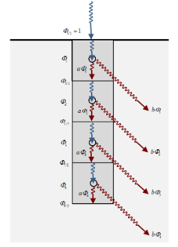
Volumen semi-infinito, borde superior irradiado uniformemente con una fluencia unitaria de fotones monoenergéticos, \(\Phi_{1/2} = 1\). El transporte de electrones se desprecia. Los fotones solo viajan en la dirección descendente. Consideramos vóxeles de tamaño unitario a lo largo del centro del volumen. La ecuación de transporte para cada voxel \(i\) resulta
\[ \colorbox{AquaMarine}{$\Phi_{i+1/2} - \Phi_{i-1/2}$} + \colorbox{SkyBlue}{$\rho_e (x) \sigma_{\text{totC},\gamma} \Phi_i (x)$} = \colorbox{Apricot}{$Q_i (x)$}. \]
Definimos \(a\) la integral de fotones dispersados que se unen a la dirección positiva \(x\):
\[ a = \frac{Q_i (x)}{\Phi(x)} \]
o simplemente la fracción de fotones que al dispersarse entran en la dirección \(x\) y
\[ b = \rho_e(x,y,z) \sigma_{\text{totC},\gamma}, \]
fracción de fotones que dejan la dirección \(x\).
Considerando que la fluencia en el centro del voxel es el promedio de los valores sobre las superficies de separación:
\[ \Phi_{i+1/2} - \Phi_{i-1/2} + \frac{b}{2} (\Phi_{i+1/2} + \Phi_{i-1/2}) - \frac{a}{2} (\Phi_{i+1/2} + \Phi_{i-1/2}) = 0, \]
si consideramos cinco vóxeles, nos da el sistema lineal de la forma:
\[ \begin{bmatrix} 1 & 0 & 0 & 0 & 0 \\ \frac{b-a}{2} -1 & \frac{b-a}{2} + 1 & 0 & 0 & 0 \\ 0 & \frac{b-a}{2} -1 & \frac{b-a}{2} + 1 & 0 & 0 \\ 0 & 0 & \frac{b-a}{2} -1 & \frac{b-a}{2} + 1 & 0 \\ 0 & 0 & 0 & \frac{b-a}{2} -1 & \frac{b-a}{2} + 1 \\ \end{bmatrix} \begin{bmatrix} \Phi_{1/2} \\ \Phi_{3/2} \\ \Phi_{5/2} \\ \Phi_{7/2} \\ \Phi_{9/2} \\ \end{bmatrix} = \begin{bmatrix} 1 \\ 0 \\ 0 \\ 0 \\ 0 \\ \end{bmatrix} \]
La forma de la matriz es casi diagonal. Se puede resolver mediante una inversión estándar:
\[ \Phi = A^{-1}b. \]
Resulta una solución cerrada:
\[ \Phi_{i+1/2} = \left( \frac{a - b + 2}{b - a + 2} \right)^i \Phi_{1/2}, \quad (i = 0, 1, 2, \ldots), \]
en la cual \(\Phi_{1/2}\) es unidad. La fluencia en el centro de los vóxeles:
\[ \Phi_{i+1} = \left( \frac{a - b + 2}{b - a + 2} \right)^i \left( \frac{2}{b - a + 2} \right) \Phi_{1/2}. \]
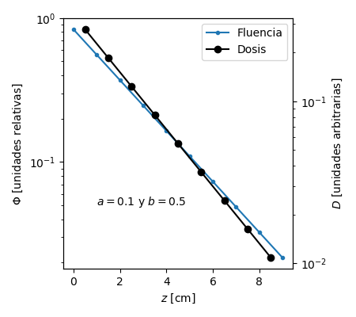
- Bajo estas condiciones simplificadas, la solución es la esperable atenuación exponencial de la fluencia.
- La dosis bajo condiciones de deposición local la podemos calcular como la reducción de la fluencia de energía.
- Como la diferencial de una exponencial sigue siendo exponencial, la dosis se atenúa exponencialmente.
Solución por métodos numéricos
- La solución por métodos numéricos se obtendría mediante el enfoque de iteración de fuente.
- Partimos de una estimación inicial de la distribución de fluencia, con todos sus elementos iguales a cero salvo el término \(\Phi_{1/2}\) que lo igualamos al valor de contorno.
- Para valores de \(a = 0.1\) y \(b = 0.5\), podemos ver cómo solucionar el problema por inversión directa:
\[ A = \begin{bmatrix} 1 & 0 & 0 & 0 & 0 \\ \frac{b-a}{2} -1 & \frac{b-a}{2} + 1 & 0 & 0 & 0 \\ 0 & \frac{b-a}{2} -1 & \frac{b-a}{2} + 1 & 0 & 0 \\ 0 & 0 & \frac{b-a}{2} -1 & \frac{b-a}{2} + 1 & 0 \\ 0 & 0 & 0 & \frac{b-a}{2} -1 & \frac{b-a}{2} + 1 \\ \end{bmatrix} \] \[ A = \begin{bmatrix} 1.0 & 0.0 & 0.0 & 0.0 & 0.0\\ -0.8 & 1.2 & 0.0 & 0.0 & 0.0\\ 0.0 & -0.8 & 1.2 & 0.0 & 0.0\\ 0.0 & 0.0 & -0.8 & 1.2 & 0.0\\0.0 & 0.0 & 0.0 & -0.8 & 1.2 \end{bmatrix} \]
\[ A^{-1} = \begin{bmatrix} 1.0 & 0 & 0 & 0 & 0\\ 0.6667 & 0.8333 & 0 & 0 & 0\\ 0.4444 & 0.5556 & 0.8333 & 0 & 0\\ 0.2963 & 0.3704 & 0.5556 & 0.8333 & 0\\ 0.1975 & 0.2469 & 0.3704 & 0.5556 & 0.8333 \end{bmatrix}\\ \;\\ b = \begin{bmatrix}1\\0\\0\\0\\0\end{bmatrix}\\ \;\\ \Phi = \begin{bmatrix}1.0\\0.6667\\0.4444\\0.2963\\0.1975\end{bmatrix}\\ \]
o alternativamente podemos iterar progresivamente la fluencia mediante Gauss-Seidel:
\[ L = \begin{bmatrix} 0 & 0 & 0 & 0 & 0\\ 0.6667 & 0 & 0 & 0 & 0\\ 0.4444 & 0.5556 & 0 & 0 & 0\\ 0.2963 & 0.3704 & 0.5556 & 0 & 0\\ 0.1975 & 0.2469 & 0.3704 & 0.5556 & 0 \end{bmatrix}\\ \;\\ D = \begin{bmatrix} 1.0 & 0 & 0 & 0 & 0\\ 0 & 0.8333 & 0 & 0 & 0\\ 0 & 0 & 0.8333 & 0 & 0\\ 0 & 0 & 0 & 0.8333 & 0\\ 0 & 0 & 0 & 0 & 0.8333 \end{bmatrix}\\ \]
En este caso, la matriz \(D\) es la matriz nula. Para que tenga sentido, modificamos el esquema Gauss-Seidel y lo aplicamos de este modo:
\[ A = L + D . \]
\[ D\Phi = b - L\Phi, \] \[ \Phi_{i+1} = D^{-1} (b - L\Phi_i), \]
\[ \Phi_0 = \begin{bmatrix}1.0\\0\\0\\0\\0\end{bmatrix},\\ \; \Phi_1 = \begin{bmatrix}1.0\\0\\0\\0\\0\end{bmatrix},\\ \; \Phi_2 = \begin{bmatrix}1.0\\0.667\\0\\0\\0\end{bmatrix},\\ \; \Phi_3 = \begin{bmatrix}1.0\\0.667\\0.444\\0\\0\end{bmatrix},\\ \; \Phi_4 = \begin{bmatrix}1.0\\0.667\\0.444\\0.296\\0\end{bmatrix},\\ \; \Phi_5 = \begin{bmatrix}1.0\\0.667\\0.444\\0.296\\0.198\end{bmatrix}\cdots\\ \]
- \(\Phi_0\) debería ser una estimación razonable de la fluencia, normalmente elaborada mediante trazado de rayos para calcular la fluencia primaria. Si hubiéramos supuesto que no hay atenuación primaria:
\[ \Phi_0 = \begin{bmatrix}1.0\\1.0\\1.0\\1.0\\1.0\end{bmatrix},\\ \; \Phi_1 = \begin{bmatrix}1.0\\0.667\\0.667\\0.667\\0.667\end{bmatrix},\\ \; \Phi_2 = \begin{bmatrix}1.0\\0.667\\0.444\\0.444\\0.444\end{bmatrix},\\ \; \Phi_3 = \begin{bmatrix}1.0\\0.667\\0.444\\0.296\\0.296\end{bmatrix},\\ \; \Phi_4 = \begin{bmatrix}1.0\\0.667\\0.444\\0.296\\0.198\end{bmatrix},\\ \; \Phi_5 = \begin{bmatrix}1.0\\0.667\\0.444\\0.296\\0.198\end{bmatrix}\cdots\\ \]
- Es interesante notar que la solución final no depende del valor que se elija para \(\Phi_0\). \(\Phi_5\) se comporta como un punto fijo: \(\Phi_5 = \Phi_6 = \Phi_7 = \cdots\)
- También se observa que, probablemente, tenemos que hacer como mucho tantas iteraciones como elementos en el espacio de fase consideremos, dependiendo de lo cerca que empecemos de la solución final.
Dificultad de implementación de un algoritmo de resolución de la ecuación de transporte de Boltzmann
La implementación de un algoritmo de este tipo implica poder particularizar una matriz general \(A\) reescalándola por las dimensiones del problema, introduciendo los valores concretos de las secciones eficaces de dispersión que a su vez dependen de los valores extraídos de las imágenes del paciente (modelado físico) y por el tipo y la energía del haz empleado.
Durante mucho tiempo se consideró mucho más realizable una implementación de algoritmo explícito mediante Montecarlo que por métodos analíticos.
La ventaja de los métodos analíticos es que una vez implementados son mucho más eficientes calculando.
Implementación comercial
- La casa comercial Varian implementa en su sistema de planificación Eclipse dos algoritmos:
- Acuros XB: basado en la resolución de la ecuación de transporte de Boltzmann.
- AAA (Analytical Anisotropic Algorithm): de tipo superposición convolución.
Desarrollo de Acuros XB
Acuros XB fue desarrollado por empleados de Transpire Inc. en el Laboratorio de Los Álamos.
Velocidad de cálculo de Acuros XB
Este algoritmo, mediante el empleo de GPU, calcula distribuciones de dosis que incluyen campos de intensidad modulada en tiempos inferiores a los de AAA (incluso empleando cálculo distribuido).
Métodos explícitos. Montecarlo
En qué consiste el método de Montecarlo
Método numérico, desarrollado por S.Ulam y J.von Neumann en 1946, que permite resolver problemas complejos mediante simulación de variables aleatorias
- El método aprovecha la naturaleza distribuida aleatoria de muchos de los procesos que se dan en el transporte de radiación.
- Por ejemplo: desde la fuente de radiación se emiten partículas según una distribución de energía y una distribución de direcciones. Las partículas emitidas cambian de posición según una distribución de alcances. Los diferentes tipos de interacción siguen una distribución de probabilidades relativas de interacción. Dependiendo de la interacción hay una cierta probabilidad de deposición de energía de forma local y de dispersión llevándose cierta energía y de generar partículas secundarias. Estos procesos secundarios abren un árbol de partículas de las que también se tienen que seguir y registrar.
Implementación del método de Montecarlo
Para implementar una simulación Montecarlo es necesario generar números aleatorios según cada una de las distribuciones de probabilidad que siguen las variables aleatorias que describen el problema.
Cada partícula genera una historia o registro de todas las interacciones que ha sufrido. El resultado de la simulación se obtiene por acumulo de historias y es de carácter no determinista, si bien la varianza del resultado se reduce a medida que aumenta el número de historias simuladas.
Estrategias posibles de simulación1
| Clase | Ventajas | Desventajas |
|---|---|---|
| Detallada (analógica), interacción por interacción | Nominalmente exacta | Realizable solo para energías bajas y medios sin profundidades grandes Requiere bases de datos muy grandes (la interpolación no es un problema) |
| Clase I (condensada) agrupación completa | Funciona para energías altas y medios extensos | Dificultades para describir desplazamientos espaciales Los cruces de interfaces requieren acciones específicas Difícil de incorporar modelos de interacción puramente numéricos Usualmente aplicada solo a dispersión elástica, no es fácil para colisiones inelásticas y bremsstrahlung |
| Clase II (mixta) | Los eventos duros se describen exactamente a partir de sus DCSs2 La dispersión elástica, inelástica y el bremsstrahlung se ajustan independientemente Flexible (desde detallada hasta clase I) |
Lenta cuando los umbrales son demasiado pequeños |
Simulaciones Montecarlo con aplicación clínica en Radioterapia
La aplicación a la Radioterapia implica dos etapas en la simulación, que por razones de eficiencia de cálculo se suelen hacer por separado.
- Simular lo que ocurre en el acelerador.
- Requiere un modelo geométrico y físico de los elementos del cabezal del acelerador.
- Se obtiene un mapa de fases que es particularizable para aplicarlo en la siguiente fase.
- Simular lo que ocurre en cada paciente.
- Requiere un modelo geométrico y físico del paciente a partir de las imágenes de CT.
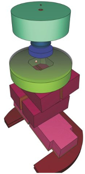
Mapa de fases
Descripción de la distribución de energía y dirección de todas las partículas que salen del acelerador y son relevantes para computar el transporte de radiación en el paciente.
Simulación del acelerador
- El modelo geométrico del cabezal del acelerador implica introducir simplificaciones y además no es posible contar con un espacio de fases propio de cada situación particular que se presenta en la práctica clínica.
- Mediante los datos medidos en el comisionado (PDDs, OF, OARs) se ajustan los parámetros de la simulación así como el modelo para la particularización del espacio de fases y de la intensidad de la fluencia.
- Este proceso se realiza durante la puesta en marcha del programa de simulación para el cálculo de la dosis.
- A partir de ahí, el acelerador es una “caja negra” de la que sale radiación con la distribución obtenida.
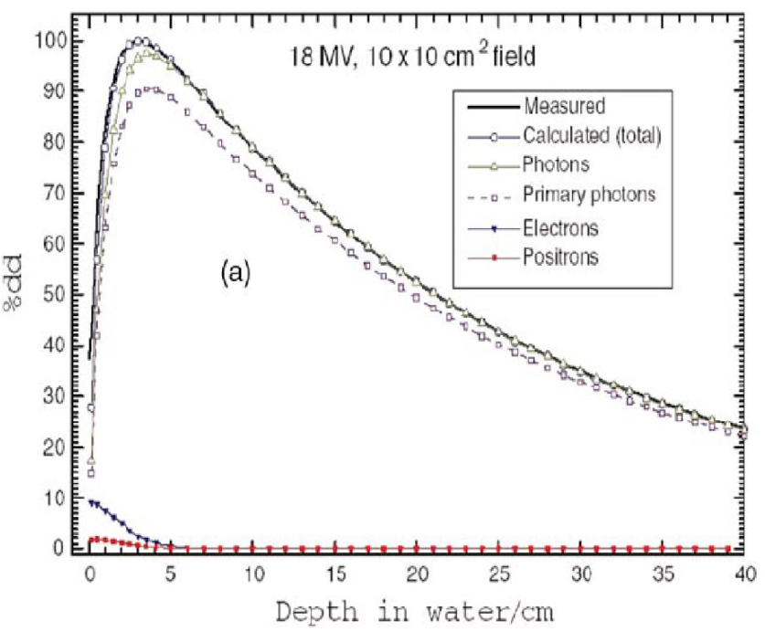
Especificación del mapa de fases
Existe un convenio de la IAEA para la especificación de los mapas de fases. Para más información consultar R. Capote et al., Phase-Space Database for External Beam Radiotherapy. Report INDC (NDS)-0484, International Nuclear Data Committee, International Atomic Energy Agency 2006, Vienna, Austria en IAEA Nuclear Data Services
Simulación del paciente
- El paciente se simula como un conjunto de vóxeles, cada uno caracterizado por una densidad electrónica, un número atómico efectivo y un poder de frenado másico.
- Como resultado se obtiene una dosis promediada en cada vóxel.
- El número de historias que es necesario calcular depende de la resolución espacial y de la precisión de cálculo requerida: una precisión del 1% exige simular aproximadamente 10,000 historias por vóxel.
Modelado del paciente
La caracterización de cada vóxel se realiza a partir de la información extraída de las imágenes de CT con la incertidumbre asociada. Como mejora, algunos sistemas emplean caracterizaciones simplificadas a un número reducido de materiales que después se interpolan.
Algunas implementaciones de propósito general empleadas en radioterapia
- ETRAN/ITS (Halbleib 1988, Seltzer 1991)
- EGS4 (Nelson et al 1997)
- EGSnrc (Kawrakow 2000)
- MCNP4 (Briesmeister 2000)
- PENELOPE (Sempau et al 1997)
- GEANT3 (1995) y GEANT4 (2003)
Limitación en la práctica clínica
Estas implementaciones se pueden utilizar para realizar simulaciones detalladas de situaciones que se dan en la práctica clínica, pero son difíciles de reutilizar para pacientes diferentes.
Por otra parte, los tiempos de cálculo que requieren no son aptos para la práctica clínica.
Implementaciones clínicas1
| Radiación | Algoritmo | Planificador | Fabricante |
|---|---|---|---|
| Fotones | xvmc++ | Monaco | Elekta |
| Electrones | eMC | Eclipse | Varian |
| Protones | RayStation 6 | RayStation | RaySearch Labs |
Para reducir los tiempos de cálculo se emplean diferentes estrategias:
Se utilizan historias condensadas para el transporte de electrones. Estos planteamientos se utilizan en los códigos que se implementan para el cálculo de haces de fotones y electrones. Corresponden a diferentes implementaciones de algoritmos del tipo VMC (Voxel Monte Carlo) o MMC (Macro Monte Carlo)
Se desprecian algunas interacciones y partículas secundarias que no representan un porcentaje importante en el depósito de energía para la resolución de cálculo típica empleada en la planificación de tratamientos. Este planteamiento es propio de los algoritmos de protones e iones pesados.
Algoritmos para electrones
Inadecuación de los algoritmos deterministas
Por la propia naturaleza de los electrones, los algoritmos para el cálculo de la dosis en campos de electrones basados en métodos analíticos de integración o interpolación no producen buenos resultados para los casos que se presentan en la práctica clínica.
Cálculo de tratamientos de electrones
En ocasiones los tratamientos de electrones se realizan sin determinar la distribución espacial de la dosis en el planificador. Se calcula únicamente y de forma manual las unidades monitor necesarias para dar la dosis de prescripción en el eje del campo a una profundidad dada.
Factores de campo para bloques estándar
Para realizar estos cálculos manuales es necesario tener tabulados para todas las energías disponibles de electrones los factores de campo correspondientes a una serie de bloques estándar, normalmente de forma circular con un rango de diámetros.
eMC
Implementa Macro Monte Carlo (MMC) (tiempo de cálculo para un campo de electrones de 20x20 cm (20 MeV) con una precisión del 1% y una cuadrícula de 2 mm: aproximadamente una hora). La mayoría de las situaciones clínicas de interés son menos exigentes. Un cálculo típico puede estar en el orden de minutos.
Implementa también el método Local-to-Global: no es necesario manejar las interacciones básicas a escala microscópica directamente en el modelo del paciente. Las interacciones microscópicas precalculadas (escala local) se utilizan durante el cálculo de dosis macroscópico (escala global).
Bases físicas del algoritmo eMC1
Los datos de CT del paciente se preprocesan: cada vóxel se clasifica en una de cinco categorías según la densidad de masa (Aire, Fantoma de Pulmón, Agua, Lucite, Fantoma de Hueso Sólido).
Los vóxeles se etiquetan con un índice de esfera que define esferas macroscópicas de diferentes tamaños. Cada esfera define un paso de transporte a lo largo de la trayectoria del electrón.
En regiones homogéneas, las esferas son grandes. Cuando la trayectoria de interacción se acerca a una inhomogeneidad, las esferas se hacen más pequeñas. El índice de esfera local describe la esfera más grande alrededor del vóxel local que no alcanza la inhomogeneidad.
Para los 5 materiales preestablecidos, se han realizado precálculos extensivos utilizando el código EGSnrc en el laboratorio para 30 energías diferentes entre 0.2 y 25 MeV y diferentes tamaños de esfera. Los resultados de estos cálculos microscópicos se almacenan en la base de datos MMC como Funciones de Densidad de Probabilidad (\(PDF\)s).
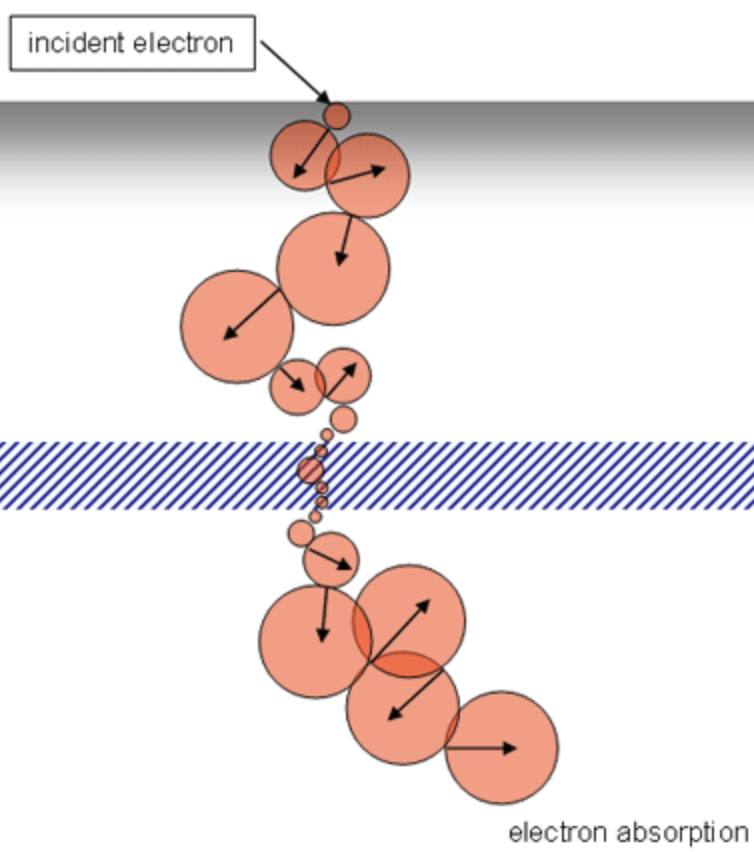
Las \(PDF\)s se almacenan en la configuración del TPS y se utilizan durante el cálculo de dosis eMC. En cada esfera, las \(PDF\)s dan la posición de salida, dirección y energía de los electrones primarios que emergen de la esfera con los parámetros de radio, material y energía incidente del electrón.
Los vóxeles que no caen exactamente en una de las 5 categorías de densidad se manejan estadísticamente: si un vóxel tiene una densidad de masa justo entre agua y lucite, entonces durante 50 de cada 100 interacciones se tratará como agua, las otras 50 interacciones como lucite.
Modelo de Espacio de Fases Inicial IPS
Describe en un plano 95 cm por debajo del foco nominal (5 cm por encima del isocentro) las principales fuentes de fotones y electrones del haz clínico:
- El haz principal de electrones divergentes (fuente: lámina de dispersión 10 cm por debajo del foco nominal)
- El haz principal de fotones divergentes (misma fuente)
- El segundo haz de electrones divergentes (fuente: punto virtual 50 cm por debajo del foco nominal)
- El segundo haz de fotones divergentes (misma fuente)
- Electrones de borde (fuente lineal alrededor de la apertura del aplicador o inserto)
- Fotones de transmisión, que consisten en:
- Fotones de Bremsstrahlung producidos en el inserto del aplicador de cerrobend
- Fotones principales, que pasan a través del inserto del aplicador (¡se endurecen!)
- Fotones principales después de la dispersión Compton en el inserto del aplicador
El modelo IPS también contiene un modelo del cabezal de tratamiento del acelerador, los detalles del aplicador de electrones y los posibles modos de energía.
Números Aleatorios
Los números aleatorios utilizados en eMC son pseudoaleatorios en el sentido de que se utiliza un valor de semilla para inicializar el generador de números aleatorios.
Usar un valor de semilla concreto implica resultados exactamente iguales. Un valor de semilla diferente implica un resultado ligeramente diferente pero igualmente válido.
Esto solo se puede ver si el número de partículas es muy bajo. Si se aumenta el número de partículas, la diferencia entre las curvas calculadas disminuye.
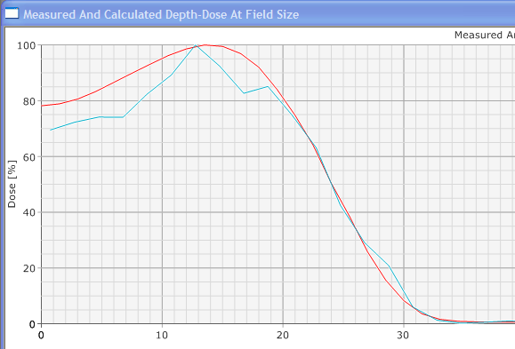

Algoritmos para protones
Limitaciones de los algoritmos para protones
Por la naturaleza de los protones, los algoritmos de tipo pencil beam producen resultados suficientemente buenos para la mayoría de los casos que se presentan en la práctica clínica. Sus principales limitaciones están en el cálculo del halo (región externa al haz primario en la que debido a radiación dispersada aparece dosis con relevancia clínica) y las correcciones por inhomogeneidad que contribuyen a aumentar la incertidumbre de rango.
Algoritmos tipo pencil beam
Algoritmos que son una variante de los de convolución/superposición y en los que la integración en profundidad del kernel se ha condensado mediante un cálculo previo. En situaciones sin inhomogeneidades reducen mucho el tiempo de cálculo sin comprometer apreciablemente la exactitud.
Bases físicas del algoritmo Montecarlo implementado en el planificador RayStation1
- El código Monte Carlo transporta protones primarios e iones secundarios (protones, deuterones y alfas).
- Se aplica un método de transporte de Clase II para los protones primarios y secundarios. Las partículas secundarias más pesadas (deuterones y alfas secundarios) se transportan solo teniendo en cuenta la pérdida de energía en aproximación de frenado continuo (CSDA).
- Los productos de reacción neutros (neutrones y gammas) no se transportan, pero sus fracciones dadas de la energía absorbida se incluyen en el balance energético y se consideran como fuga.
No se considera la producción de electrones delta (los electrones liberados tienen en promedio un rango muy corto y no son relevantes para el cálculo de la dosis física en vóxeles de tamaño 1 mm o más grandes).
El motor de dosis MC informa la dosis física como dosis a una pequeña cavidad de agua incrustada en el medio local, es decir, como dosis en agua en concordancia con el motor de dosis con algoritmo pencil beam.
La simulación de transporte se realiza en geometrías representadas por rejillas de vóxeles rectilíneos donde un vóxel se caracteriza por su densidad de masa, composición elemental y energía de ionización media.
Modificadores de haz (range shifters y bloques de colimación)
La simulación en los modificadores de haz se lleva a cabo utilizando la misma mecánica de transporte y modelos físicos que para los pacientes, con la diferencia de que las deposiciones de energía solo se registran mientras están en la rejilla de transporte del paciente.
La simulación Montecarlo comienza generando protones primarios en un plano sobre el paciente, o sobre el modificador del haz más alejado si está presente.
Los protones se propagan a través de la malla de cálculo hasta que se detienen o escapan de la geometría.
Cálculo final de dosis
- El error estadístico por vóxel se estima como la varianza de la dosis por vóxel considerando 12 lotes.
- Se calcula una única estimación de error estadístico por haz como el error medio de una desviación estándar en todos los vóxeles con una dosis superior al 50% de la dosis máxima por haz.
- La dosis final calculada por MC se marcará como clínica si el error estadístico por haz es menor que un umbral definido por el usuario. De lo contrario, la dosis se considerará aproximada.
- El error estadístico no se calcula cuando el motor de dosis MC se utiliza para dirigir la optimización. Por lo tanto, la dosis después de la optimización siempre se considerará aproximada cuando se seleccione el motor de dosis MC para la optimización.
- El cálculo es determinista, es decir, cálculos repetidos producen el mismo resultado numérico.

Algoritmos cálculo dosis. Física de la radioterapia